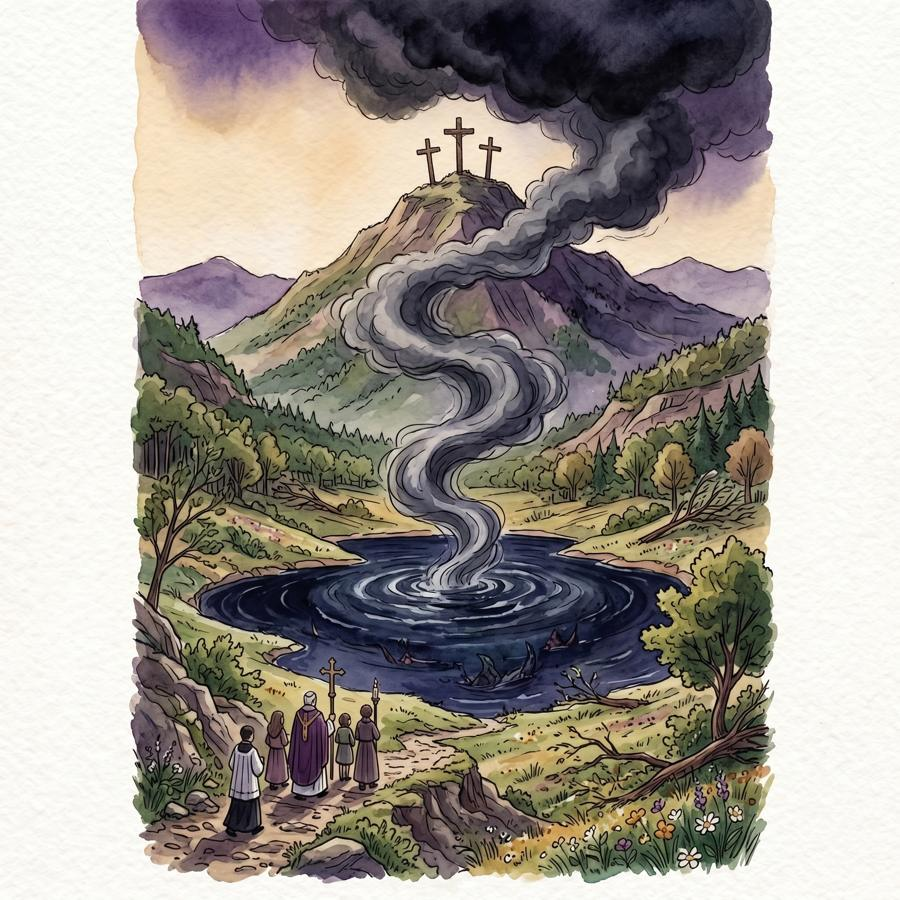

Visita · Gualba
Per damunt del salt de Gualba, el Gorg Negre és un dels paratges més coneguts del Montseny, tant pel paisatge com per les llegendes que s'hi expliquen. Segons el Mapa de Patrimoni Cultural,…